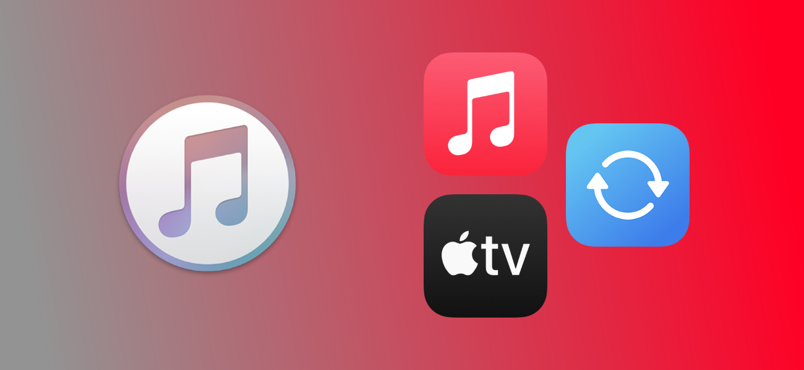
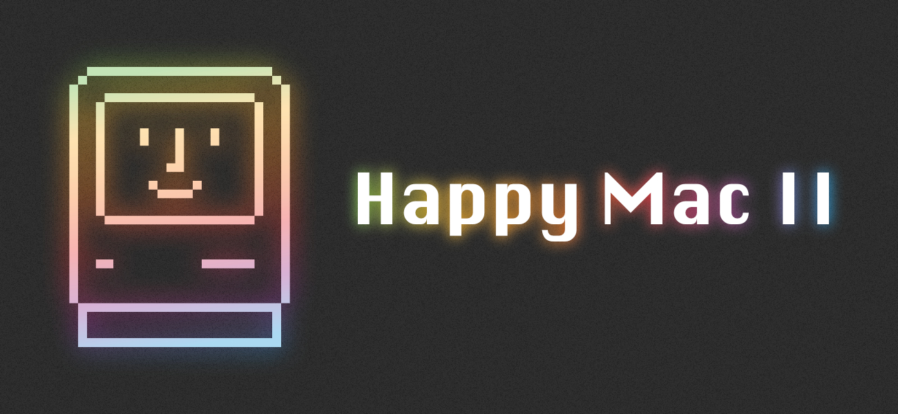

February 9, 2024

Goodbye, iTunes for Windows!
Apple has released its new Music, TV and Devices apps for Windows, bidding farewell to iTunes (mostly).
January 29, 2024

Wallpaper: Happy Mac II
Another version of the Happy Mac wallpaper, made for the 40th birthday of the Mac.